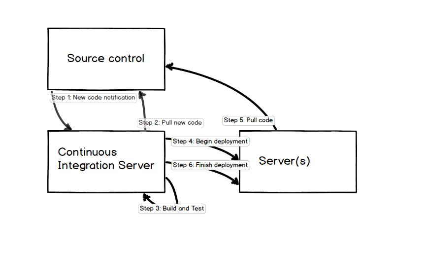

Continuous integration (CI) automates building, testing and deploying applications.
When CI is set up well it can dramatically reduce deployment times by eliminating manual steps and ensure code does not have bugs that are being checked by automated tests. Source code changes as a project evolves. CI combined with unit and integration tests check that code modifications do not break existing tests ensure the software works as intended.
The following picture represents a high level perspective on how continuous integration and deployment can work.

In the above diagram, when new code is commited to a source repository there is a hook that notifies the continuous integration server that new code needs to be built (the continuous integration server could also poll the source code repository if a notification is not possible).
The continuous integration server pulls the code to build and test it. If all tests pass, the continuous integration server begins the deployment process. The new code is pulled down to the server where the deployment is taking place. Finally the deployment process is completed via restarting services and related deployment activities.
There are many other ways a continuous integration server and its deployments can be structured. The above was just one example of a relatively simple set up.
Jenkins is a common CI server for building and deploying to test and production servers. Jenkins source code is on GitHub.
Go CD is a CI server by ThoughtWorks that was designed with best practices for the build and test & release cycles in mind. Go CD source code is on GitHub.
Strider is a CI server written in node.js. Strider source code is on GitHub.
BuildBot is a continuous integration framework with a set of components for creating your own CI server. It's written in Python and intended for development teams that want more control over their build and deployment pipeline. BuildBot source code is on GitHub.
TeamCity is JetBrains' closed source CI server that requires a license to use.
Travis CI provides free CI for open source projects and has a commercial version for private repositories.
Bamboo is Atlassian's hosted continuous integration that is also free for open source projects.
Circle CI works with open or closed source projects on GitHub and can deploy them to Heroku if builds are successful.
Shippable uses Docker containers to speed the build and integration process. It's free for public repositories.
Drone is another CI service that also provides free builds for open source projects.
Codeship provides continuous integration for Python 2.7.
Snap is a CI server and build pipeline tool for both integrating and deploying code.
What is continuous integration? is a classic detailed article by Martin Fowler on the concepts behind CI and how to implement it.
Continuous Deployment For Practical People is not specific to Python but a great read on what it entails.
Continuous Integration & Delivery - Illustrated uses well done drawings to show how continuous integration and delivery works for testing and managing data.
Diving into continuous integration as a newbie is a retrospective on learning CI from a Rackspace intern on how she learned the subject.
StackShare's Continuous Integration tag lists a slew of hosted CI services roughly ranked by user upvotes.
Running Jenkins in Docker Containers is a short tutorial showing how to use the official Jenkins container on the Docker hub.
Good practices for continuous integration includes advice on checking in code, commit tests and reverting to previous revisions.
Deploying to AWS using Ansible, Docker and Teamcity is an example walking through one potential way to use the Teamcity CI server for automated deployments.

Looking for a detailed step-by-step Python deployment tutorial? Check out the upcoming Full Stack Python Guide to Deployments book.